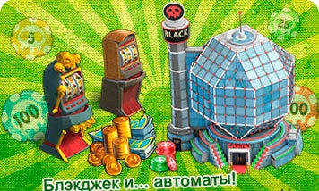

Главная / Обновления
Обновления
13 карточек из предыдущего исследования. Полнота и точность каждой карточки нуждаются в дополнительной сверке.
| —Обновление Мой Мир — 21 июня 2011 | История обновлений | исторические сведения браузерной игры; см. источник | предварительные сведения, требуется сверка |
| —Обновление Мой Мир — 29 июня 2011 | История обновлений | исторические сведения браузерной игры; см. источник | предварительные сведения, требуется сверка |
| —Обновление Мой Мир — 5 июля 2011 | История обновлений | исторические сведения браузерной игры; см. источник | предварительные сведения, требуется сверка |
| —Пасхальные яйца и корзиночки — историческая акция | Историческое событие | браузерная социальная версия; сеть и дата обновления не установлены | предварительные сведения, требуется сверка |
| —Байки Дона Санчеса — ежедневные квесты | Историческое событие | браузерная социальная версия; сеть и дата обновления не установлены | предварительные сведения, требуется сверка |
| —Эколог года — уборка и ежедневные задания | Историческое событие | браузерная социальная версия; сеть и дата обновления не установлены | предварительные сведения, требуется сверка |
| —Праздничная эстафета — Полигон | Историческое событие | социальная браузерная версия; сеть не указана | предварительные сведения, требуется сверка |
| —Обновление 6 апреля 2012 — Школа и Колодец | История обновлений | историческая браузерная версия ВКонтакте; редакция неизвестна | предварительные сведения, требуется сверка |
| —Обновление 8 марта 2012 | История обновлений | историческая браузерная версия ВКонтакте; редакция неизвестна | предварительные сведения, требуется сверка |
| —Обновление 22 февраля 2012 | История обновлений | историческая браузерная версия ВКонтакте; редакция неизвестна | предварительные сведения, требуется сверка |
| —Обновление 27 января 2012 | История обновлений | историческая браузерная версия ВКонтакте; редакция неизвестна | предварительные сведения, требуется сверка |
 Казино — обновление 28 сентября 2012 | История обновлений | историческая браузерная версия ВКонтакте; редакция неизвестна | предварительные сведения, требуется сверка |
 Зомби на футболе — обновление 2012 Зомби на футболе — обновление 2012 | История обновлений | историческая браузерная версия VK; редакция неизвестна | предварительные сведения, требуется сверка |